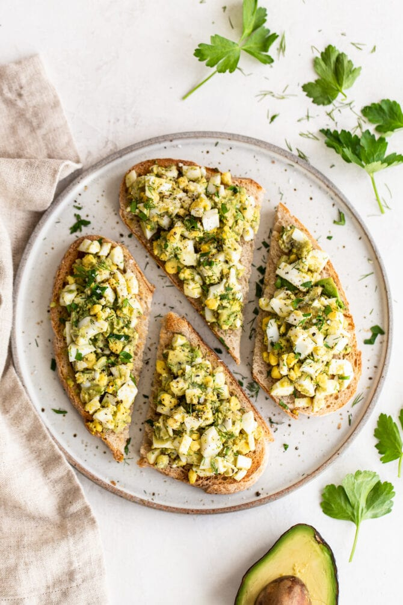

Avocado Egg Salad

Description
This healthy avocado egg salad uses mashed avocado in place of mayo. It’s creamy, flavorful and great served on salad,
lettuce wraps or bread!
Egg salad is traditionally made with mayonnaise, but if you aren’t a fan of mayo or are looking for a healthier option,
this version is for you!
Ingredients
- Hard boiled eggs, grated or finely chopped - 4
- Unsweetened almond milk - 1 cup
- Ripe avocado, mashed - 1/2
- Finely chopped dill pickle - 1/2 tablespoon
- Chopped scallion, white part only - 1/2 tablespoon
- Ground pepper - 1/2 teaspoon
- Fine sea salt - 1/8 teaspoon
- Fresh chopped parsley or dill, for garnish - 1 tablespoon
Steps
- Combine all ingredients in a bowl. Stir. Top with fresh herbs and serve.
- Store salad in an airtight container in the refrigerator. The salad will keep for 3-5 days. The avocado might brown a
tiny bit, but it is still safe to eat.